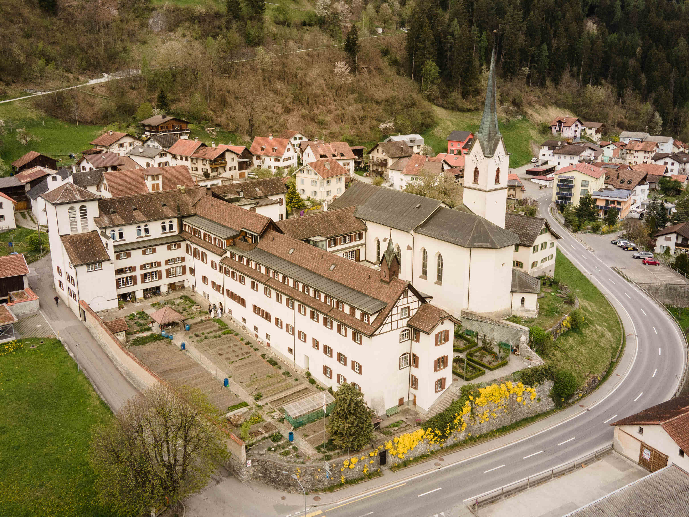

Das Kloster Cazis wurde als Frauenstift Anfang des 8. Jahrhunderts von
Bischof Viktor II. (um 700) gegründet. Es war das erste Frauenstift in
Churrätien. Es ist vermutlich eine der ältesten Klostergründungen im
Bistum Chur. Doch wie haben die Nonnen gelebt? Waren immer alle im
Schweigen versunken und verrichteten brav ihre Gebetszeiten, so wie wir
uns das meistens vorstellen? Die Geschichte zeigt, dass sich in über
tausend Jahren vieles ausserhalb des Klosters, aber auch innerhalb der
Klostermauern veränderte.
Zu Beginn des 8. bis ins 10. Jahrhundert war das Stift eine Gemeinschaft
von Nonnen. Es waren wahrscheinlich Kanonissinnen: nach der Aachener
Regel aus dem Jahr 816 gemeinschaftlich lebende Chorfrauen ohne Gelübde,
aber mit einer rechtlichen Bindung an das Stift. Von 1045 bis 1156 ist
diese Lebensweise eindeutig bezeugt.
Das erste Klostergebäude war nicht am heutigen Platz mitten im Dorf,
sondern etwas ausserhalb auf einer Anhöhe. Dort erinnert heute noch der
rätoromanische Name Claustra vedra, was ‹altes Kloster› bedeutet,
daran. Es wird vermutet, dass das Kloster nach einem Brand von 1369 ins
Dorf verlegt wurde. Ein Fresko (Wandmalerei) in der Pfarrkirche Cazis
zeigt, wie das neue Kloster ausgesehen haben könnte. Brände waren zu
dieser Zeit oft sehr zerstörerisch. Das zeigte sich 1496 noch einmal,
als das Kloster durch einen weiteren Brand erneut verlegt werden musste,
an seinen heutigen Standort.
Fresko in der Pfarrkirche Cazis. (Foto: Sr. Deborah Koch)
Die Augustinerinnen
Bischof Adalgott von Chur († 1160) reformierte 1156 das Kloster, trotz
Widerstand der Schwestern. Dem verweltlichten Kanonissenstift wurde die
Augustinerregel aufgezwungen und in ein reguliertes Kloster umgewandelt.
Ein Prämonstratenser (Chorherr) von St. Luzi in Chur stand nun neben der
Äbtissin dem Kloster mit dem Titel eines ‹Priors› vor, tatsächlich nahm
er aber die Funktion des Klostergeistlichen ein. Die Reformurkunde
zeigt, dass nur einige Kanonissinnen bereit waren, Augustinerinnen zu
werden und sich auf eine strengere Lebensweise verpflichten wollten. Das
bezeugt vermutlich auch, dass die Nonnen vor der Umwandlung nicht
wirklich nach den Regeln lebten.
Ein einschneidende Veränderung für das Kloster war der zweite
Ilanzerbrief vom 25. Juni 1526. Die Verwaltung der Klöster wurde der
weltlichen Obrigkeit unterstellt und man verbot die Aufnahme von
Novizinnen. Als die letzte Augustinerin im Jahr 1570 starb, wurde das
Kloster aufgehoben. Die Stiftskirche ging an die Gemeinde Cazis über und
das Klostergebäude wurde an Privatleute übergeben. Die Stiftskirche ist
bis heute die römisch-katholische Pfarrkirche in Cazis.
Neuanfang
Als 1618 der Dreissigjährige Krieg ausbrach, blieb auch Graubünden nicht
verschont. Im Sommer 1622 wurde Bünden Österreich untertan. Der
Gotteshaus- und der Obere Bund unterzeichneten am 30. September 1622 in
Lindau einen Vertrag, worin Österreich vorgab, die Klöster Cazis, St.
Nicolaus und St. Luzi in Chur wieder herzustellen. Ebenfalls sollten
ihnen die Güter zurückerstattet werden. Zwei Jahre später gelangte der
päpstliche Nuntius Alexander Scappi (1572–1653) an den Grauen Bund und
forderte die Boten auf, die Güter, Renten und Besitztümer dem Kloster
Cazis ohne Widerrede zurückzugeben. Der Bundestag in Thusis war damit
grundsätzlich einverstanden, aber es vergingen 20 Jahre, bis zur
Umsetzung.
Bischof Johann VI. (1595–1661) nahm sich der Sache an und verhalf den
Nonnen dazu, dass ihnen das leerstehende Klostergebäude zur Verfügung
gestellt wurde. Das Kloster war jedoch in einem desolaten Zustand und
musste dringend renoviert werden. Um das nötige Geld aufzutreiben,
wurden Kapuzinerpatres (franziskanische Bettelbrüder) eingesetzt, welche
die Schwestern – wahrscheinlich waren es Karmelitinnen – bis 1647
betreuten. Im Jahr 1644 berief der Bischof zwei Franziskanerinnen (oder
Klarissinnen) aus Meran nach Cazis, um das Klosterleben in die richtigen
Bahnen zu lenken. Es ist nicht bekannt, wie lange die Franziskanerinnen
in Cazis waren, denn das Klosterleben kam erneut zum Erliegen.
Die Dominikanerinnen
Im Jahr 1647 setzte sich Bischof Johann VI. dafür ein, dass in Cazis das
klösterliche Leben wieder aufgenommen wurde. Zur Neugründung und Leitung
einer Schwesterngemeinschaft holte er die Chorfrau Johanna Gauwin
(1600–1684) aus dem Dominikanerinnenkloster Bludenz.
Mit Schwester Johanna Gauwin kam auch der Dominikanerorden nach Cazis.
Die Schwestern gehörten nun dem II. Orden des heiligen Dominikus an.
Somit hatten sie die strenge päpstliche Klausur zu beachten und konnten
nur mit spezieller Erlaubnis des Diözesanbischofs die Klausur verlassen.
Es gab drei Arten von Schwestern: Die Chorfrauen, die Laienschwestern
und die Hilfsschwestern, auch Terziarinnen genannt.
Die Chorfrauen beteten das grosse Brevier (Stundengebet) wie die Patres
in Latein und trugen beim Gottesdienst die vorgeschriebenen Gesänge nach
dem Gregorianischen Choral vor. Zudem nähten und stickten sie. Sie
trugen einen weissen Habit (Ordenstracht), ein weisses Skapulier
(Schulterkleid) und einen schwarzen Schleier. In der Pfarrkirche
übernahmen sie von 1647–1905 den Organistendienst und den Gesang. Einige
gebildete Schwestern unterrichteten in klostereigenen Räumen Mädchen in
klassischen Sprachen, Mathematik und Musik.
Die Laienschwestern beteten statt des Breviers täglich die 15
Geheimnisse des Rosenkranzes. Sie verrichteten die häuslichen Arbeiten
und kümmerten sich um den Klostergarten. Sie trugen einen weissen Habit,
ein schwarzes Skapulier und einen weissen Schleier. Bei Abstimmungen und
Wahlen hatten sie keinerlei Rechte. Sie standen unter den drei bekannten
Ordensgelübden wie die Chorfrauen, einschliesslich der päpstlichen
Klausur. Sie besorgten die Kirchenwäsche für diverse Pfarreien und
führten die Hostienbäckerei.
Die Terziarinnen verrichteten anfänglich ihre eigenen Gebete und legten
keine Gelübde ab, sondern nur ein Versprechen auf Zeit. Sie erledigten
besonders die Aufgaben ausserhalb der Klausur. In der Kapelle und bei
den Mahlzeiten hatten sie ihre eigenen Räume und Plätze. Bei
Abstimmungen und Wahlen besassen sie kein Mitbestimmungsrecht. Diese
Terziarinnen waren sehr wichtig aufgrund der strengen Klausur der Chor-
und Laienschwestern. Sie trugen ein einfaches, schwarzes Kleid.
Foto des ersten Schwesternkonvents unter dem Priorat von Sr. M. Dominika Christoffel 1885–97. Die Schwesterngemeinschaft zeigt die drei verschiedenen Arten von Schwestern. (Archiv Frauenstift Cazis)
Neben dem verheerenden Klosterbrand im Jahr 1768, der beinahe den Ruin
bedeutete, waren auch die ärmlichen Verhältnisse ein Problem. Von
1807–27 starben 18 Schwestern an Mangelernährung und zu wenig Bewegung
im Freien. Der übrig gebliebene Rest von 14 Schwestern war kränklich.
Auch hier kam die Hilfe von Seiten des Bischofs, indem er sie mit den
nötigen Mitteln unterstütze.
Im Jahr 1928 wurden neue Konstitutionen vom Bischof genehmigt, die dem
Kloster mehr Freiheiten boten, um nach aussen zu wirken. Damit trat die
Schwesterngemeinschaft offiziell vom II. in den III. Orden über. 1936
wurden schliesslich die Terziarinnen zusammen mit den Laienschwestern
den Chorfrauen in Kleidung und Recht völlig gleichgestellt.
Ein wichtiger Neubau war die 1931 erbaute St. Josephs-Kapelle, welche
für das Chorgebet und die Messfeier auch heute noch so genutzt wird.
St. Josephs-Kapelle mit Blick aus dem Schwesternchor in Richtung Altar. (Foto: Sr. Deborah Koch)
Heute im Jahr 2024 ist das Kloster Cazis mit über 40 Schwestern in verschiedenen Bereichen tätig. Besonders das Gästehaus ist ein wichtiger Bestandteil für das Wirken nach aussen. Den Gästen wird die Möglichkeit geboten, am Stundengebet der Schwestern, welches sie musikalisch mit Harfe begleiten, teilzunehmen. Auch Stille, Erholung und Exerzitien (geistliche Übungen und Besinnung) sind Angebote für Gäste und ein Versuch, auf die Nöte der Zeit eine Antwort zu geben.
Kloster Cazis, rechts angebaut die Pfarrkirche. (Foto: Studierende FHGR)
Deborah Koch lebt im Kloster Cazis und ist Studentin der Theologischen Hochschule Chur.
Weitere Artikel von {{ author.author }} finden Sie hier:
Zur Vertiefung:
- Sr. M. Lea Blöchlinger: Dominikanerinnen Cazis, Cazis 1980.
- Reinhold Kaiser: Churrätien im frühen Mittelalter. Ende 5. bis Mitte 10. Jahrhundert, herausgegeben von Verein für Bündner Kulturforschung, Chur und der Gedächtnisstiftung Peter Kaiser (1793–1864), Vaduz/Basel 1998.
- Florian Hitz: «Cazis (Kloster)», in: Historisches Lexikon der Schweiz (HLS), Version vom 19.04.2012, verfügbar unter: www.hls-dhs-dss.ch (7.6.2024).